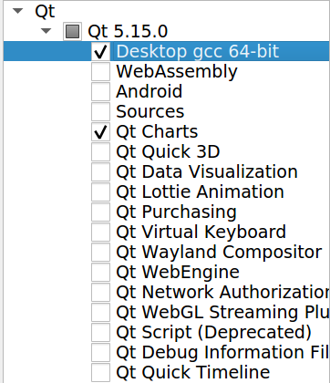

Installation
ROS End-Effector is a ROS package tested on ROS kinetic, melodic, noetic (Ubuntu 16, 18, 20)
So, first, be sure to have ROS installed as described here.
Note
We are going to use the abreviation ROSEE for the ROS End-Effector from now on
Basic Installation
We have released our package in the official ROS repositories! You can install it for ROS (melodic and noetic) and ROS2 (foxy) with one of these:
sudo apt install ros-melodic-rosee-msg ros-melodic-end-effector
sudo apt install ros-noetic-rosee-msg ros-noetic-end-effector
sudo apt install ros-foxy-rosee-msg ros-foxy-end-effector
Full Installation (ROS1)
With the full installation (respect to the basic) you will install also the ROS End-Effector GUI and the plugin necessary to run the simulated robot in gazebo. You will compile everything from source
The following steps will guide you to install all packages of ROSEE using a .rosintall file.
The file will make you clone the necessary repository from their master branches.
Run in the terminal:
git clone -b devel https://github.com/ADVRHumanoids/ROSEndEffectorPackageManager.git
cd ROSEndEffectorPackageManager
./setup.sh
cd src
catkin_init_workspace
rosws update
cd ..
catkin_make -DBUILD_WITH_XBOT2=OFF
Note
The sh script will install external necessary dependencies with apt-get
Note
In future, if you want to pull the last updates, you can use rosws update to pull all the updates of each repository with this unique command!
Note
Among the ROSEE packages, there are two forks to support non linear mimic joints. Check End-Effector and their coupled joints for more info.
You are now ready to use ROS End-Effector! Check How to use ROS End-Effector with your end-effector and Examples with ready to use end-effectors sections to learn how to use it.
XBot2 Integration
ROS End-Effector also supports XBot2 to implement the Hardware Abstraction Layer, to communicate with the real or simulated robot. Please dowload it here. Be sure to download a >2 version!. Some helps on how setup xbot2 are available here.
ROS End-Effector include an integrated XBot2Hal: to compile it please set the BUILD_WITH_XBOT2 variable:
catkin_make -DBUILD_WITH_XBOT2=ON
Logging with MatLogger2
You can use the MatLogger2 tool to log data of your end-effector. This is an optional feature, if you do not want it, nothing else to do is required.
If you want it, you can install MatLogger2, following here.
Please note that if you want to install also XBot2 (as described above) this step is not necessary since matlogger is included into the XBot installation
After installation, you should recompile the package to let cmake set the correct flag.
ROS End-Effector GUI second tab
Some functionalities of the ROS End-Effector Graphical User Interface are available only with a Qt version greater or equal 5.9, which may be not installed by default into your system.
These functionalities include an additional tab where joint state can be plotted in real-time, thanks to Qt Charts. More information about the ROS End-Effector GUI are available at ROS End-Effector GUI page.
It seems that from Ubuntu 18 and newer, the Qt installer is not necessary anymore, simply install these before compiling rosee_gui:
sudo apt install qttools5-dev libqt5charts5-dev qtdeclarative5-dev
Installation issues
Qt dependencies old method
Any recent version of Qt can be installed following the link to the Qt website.
Note
Multiple versions of Qt may coexist in your system, so it is recommended to not remove the default version.
When choosing the Qt components to install, be sure to check Qt Charts from the menu, as in the figure below (installer window may change in newest versions):
{kind=link}
Note
With installer, also qtcreator (the IDE) will be installed, without the possibility to uncheck it. This seems a known bug of Qt (reference here). It should be safe to remove qtcreator manually, expecially if you have already it installed.
After installed Qt, be sure to compile ROS End-Effector in an cleaned workspace (simply delete any devel, build, install folders, if present) specifying the Qt path when calling catkin_make:
catkin_make --cmake-args -DQT5_PATH:STRING=#<gcc_64 path folder of qt5>
# for example
# catkin_make --cmake-args -DQT5_PATH:STRING=/usr/lib/x86_64-linux-gnu/Qt5.12.8/5.12.8/gcc_64
Note
the --cmake-args argument is only necessary once (when the workspace is cleaned), future calls to catkin_make can omit it
Recent version of Qt can cause an error like this:
qt.qpa.plugin: Could not load the Qt platform plugin "xcb" in "" ...
Solve simply installing libxcb-xinerama0 :sudo apt-get install libxcb-xinerama0